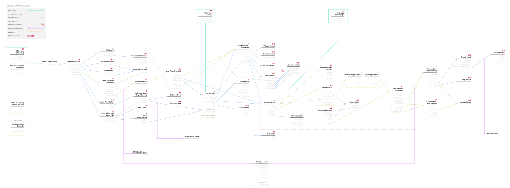
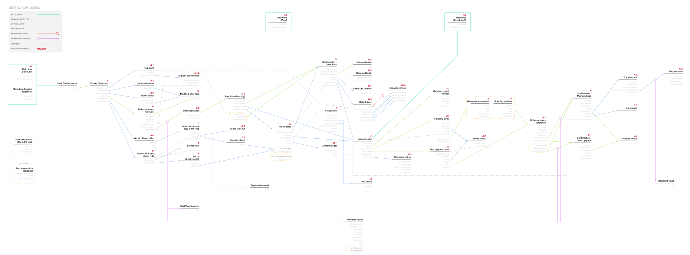

The Approach
In order to best understand the current state of the product we performed a total UX audit. We analyzed our user's main motivations and pain points by collecting support tickets and combing through historical survey data.
Next, we physically printed app screens and taped them to the wall to fully understand the interconnected user flows – giving us a physical space to discuss possible changes to the overall UX or Ui. We combined this with a visual See | Do map to provide a crystal clear understanding of the current product design architecture. Finally, we identified core screens as "user flow milestones" and practiced a content hierarchy card-sort exercise to prioritize the content on those screens.
 
